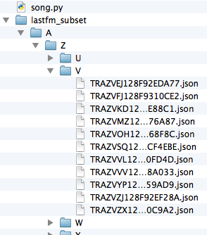

1. Python Basics Questionnaire
Enter correct answers in the form at A-plus.
Enter correct answers in the form at A-plus.
In this exercise, you are asked to implement a function called keyword_usage. The function takes two arguments where the first argument is a string and the second one is a list of strings. The returned value is a tuple of same length as the second argument with boolean values indicating if the items in the second argument are present as words in the first argument. Whitespace is used to separate words in the text and puctuations are part of the words (the default string.split behavior).
For example:
>>> from keyword_usage import keyword_usage
>>> res = keyword_usage('Dive Into Python', ['Python', 'python', 'scala'])
>>> res
(True, False, False)
Create a new file exercises/04_python/keyword_usage.py
and implement the specified function. You should test your code by running python3
in the same directory and trying the example above. The grader will try also other values
and maybe you should do so too.
Add, commit and push your new file and possible changes to the Git as in round 1. Finally, just copy and paste your GitLab project's URL to A-plus.
In this exercise, you should define two classes: Point and Circle.
The following example illustrates how the classes should behave:
>>> from geometry import Point, Circle >>> p1 = Point(0,0) >>> p2 = Point(2,4) >>> p1.distance_from(p2) 4.4721359549995796 >>> circle = Circle(p2,4) >>> circle.is_inside(p1) False >>> circle.is_inside(Point(2,2)) True
Points are defined by giving the x and y coordinates. The distance between two points can be calculated by using the distance_from method. Points should have publicly available at least the following properties x, y and distance_from
Circles are defined by giving the center point and the radius. Circle has the method is_inside that answers if the given point is inside the circle or not. Circles should have publicly available at least the following properties center, radius and is_inside.
Create a new file exercises/04_python/geometry.py
and implement the specified classes.
Add, commit and push your new file and possible changes to the Git as in round 1. Finally, just copy and paste your GitLab project's URL to A-plus.
This exercise deals with JSON-formatted data that is loaded from files. We are using external data, the Million Song Dataset. From their page you can download a download subset of the data (.zip, ~ 13 MB) and extract it to exercises/04_python/
You do not need to add subset to your repository it is just convenient to have when testing your solution. In a matter of fact, adding the dataset to your repository will just slow grading down for you. If the untracked files bothers you, you can add the folder to .gitignore, for more details see GitHub's article on ignoring files.
In the extracted directory 'lastfm_subset' you will find a hierarchy of subdirectories, e.g. lastfm_subset/A/M/G/ that contain a number of .json files as such: TRAMGAZ128F148D4C3.json, TRAMGJJ128F421487E.json, ... , TRAMGZR128F429AF94.json. These JSON formatted files have information about a song, e.g. TRAHQDQ128F421F629.json (found in lastfm_subset/A/H/Q/) contains:
{
"artist":"Sam Fan Thomas",
"timestamp":"2011-08-04 20:13:44.510970",
"similars":[
["TRTCJDC128F427EDB9", 1],
["TRATSNE128F427EDB6", 0.80318100000000003],
["TRZXWAY128F422AD07", 0.0076908000000000002],
["TRGTRZZ128F422AD0A", 0.0068965600000000004],
["TRFHSHO128F427ED67", 0.0022482800000000001],
["TRDXALH128F425CF9A", 0.00075191699999999995]
],
"tags":[
["Makossa", "100"],
["indigenous music", "100"]
],
"track_id":"TRAHQDQ128F421F629",
"title":"Sabina"
}
The track_id always corresponds to the filename. Furthermore, the track_id tells where that particular file is found on the directory structure. TR A M G ZR128F429AF94 means that that particular song is found at lastfm_subset/A/M/G/ directory. You can assume that the track_id always starts with TR followed by three capital letters (A-Z) that will tell where the file is found.

These tracks have two fields which can have multiple values (or none): tags and similars. Tags refer to labels last.fm users have assigned to the song. Similars contain a list of track_ids to songs that have been deemed similar by algorithmic magic.
Your task is to write a class called Song in song.py file. It takes one argument, the track_id of a song as a string. E.g. some_song = Song('TRAWHKS128F9330619')
some_song.artist, some_song.title, some_song.timestamp, and some_song.track_id. If loading the .json file fails, those attributes should have the following values:
.get_tags([limit]) method. It should return a list of tags in the song that are equal or higher than the limit given. The limit is optional and should default to 0 (i.e. get all tags). Note it should only return the tag names in the list..get_similars([limit]) method. It should return a list of track ids in the song that are equal or higher than the limit given. The limit is optional and should default to 0 (i.e. get all similar songs)..shared_tags(other_song_instance) method, that will return a tuple containing all the tags that these two songs have in common. Note, that each tag should be included only once..combined_tags(other_song_instance) method, that will return a tuple containing all the tags that these two songs have. Note, that each tag should be included only once.Here is a an annotated example, of the behavior of Song:
>>> from song import Song
>>> some_song = Song('TRAWHKS128F9330619') # create a new Song instance some_Song
>>> some_song.get_tags() # Get all the tags for the song
['piano', 'Piano - pleasant']
>>> some_song.get_tags(90) # Get subset of tags based on their score
['piano']
>>> some_song.get_similars() # Get all the track_ids of similar songs
['TRZKEHI128F93306C7', 'TRLNBWD128E0783584', ... 45 track_ids ..., 'TRMFVJD128F4258DCC']
>>> some_song.get_similars(0.9) # Get similar track_ids that are at least 0.90 similar
['TRZKEHI128F93306C7']
>>> other_song = Song('TRANXZZ128F4230613') # create another Song instance
>>> other_song.get_tags() # Get all tags for this song
['piano', 'new age', 'relaxing', 'beautiful']
>>> other_song.shared_tags(some_song) # Find out what tags these both songs have
('piano',)
>>> other_song.combined_tags(some_song) # Find out the combined tags of these both
('new age', 'beautiful', 'relaxing', 'piano', 'Piano - pleasant')
You should first get familiar and download the dataset and extract it to exercises/04_python/ and create a song.py.
If you already don't know it, familiarize yourself with JSON format, note that there is a Python library for handling JSON data
You can assume that on the grader there will be a similar directory hierarchy lastfm_subset/LETTER/LETTER/LETTER/*.json in the place where your song.py will reside.
shared_tags and combined_tags methods can be created in many ways but Python sets might be worth looking into.
It might also be useful to create helper functions for finding particular cases, such as which two songs share some tags, but not all etc. It is not strictly needed or graded but it might help.
Add, commit and push your new file and possible changes to the Git as in round 1.
Finally, just copy and paste your GitLab project's URL to A-plus. The file we will check is exercises/04_python/song.py.
You can assume that on the grader there will be a similar directory hierarchy lastfm_subset/LETTER/LETTER/LETTER/*.json in the place where your song.py will reside.